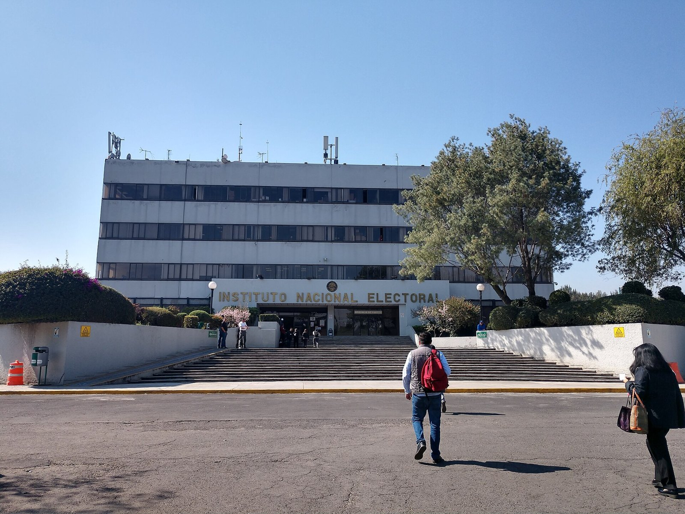
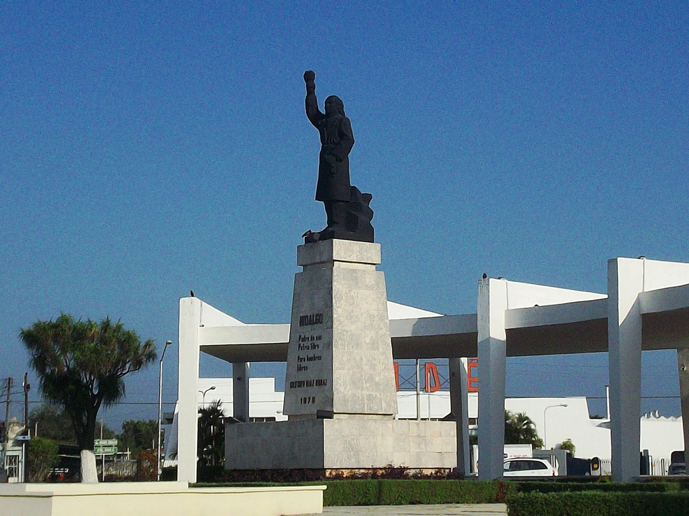

OKpolítico
OKpolítico
5 cosas de la mañanera del viernes 23 de octubre
Resumen rápido de la mañanera del 23 de octubre del 2026: compras de equipo médico de alta tecnología, aclaraciones sobre la Modalidad 40 de pensiones, el abasto de medicamentos frente a reportes de recetas no surtidas y el penal de Papantla.

Crisis en el INE: piden renuncia a Guadalupe Taddei
En este video de OKpolítico explica, desglosamos la confrontación surgida en el Consejo General del Instituto Nacional Electoral (INE). Representantes del PRI y de Somos MX exigier
24 de octubre de 2026
Lucio Cabañas: 50 años entre la guerrilla y la Guerra Sucia
A 50 años de la muerte del profesor normalista y líder guerrillero Lucio Cabañas Barrientos en la sierra de Tecpán, OKpolítico explica las causas de su levantamiento armado y las c
23 de octubre de 2026
IMSS modifica reglas de cotización en la Modalidad 40
El Instituto Mexicano del Seguro Social ajustó los criterios de incorporación a la Modalidad 40 mediante acuerdo de su Consejo Técnico. La medida frena pagos retroactivos y fije lí
23 de octubre de 2026Ernesto Zedillo: del origen humilde al rescate bancario
Exploramos la trayectoria de Ernesto Zedillo, desde sus inicios en Mexicali hasta su papel en la transición democrática de México. Analizamos datos sobre su gestión económica, el c
23 de octubre de 2026
Partidos piden la renuncia de Taddei por fiesta y contratos del INE
Representantes de partidos exigen la separación de Guadalupe Taddei como consejera presidenta del INE ante presuntos conflictos de interés con un contratista. Una investigación per
23 de octubre de 2026¿Cómo murió el senador Belisario Domínguez?
Conoce los hechos documentados y los mitos en torno al asesinato del senador Belisario Domínguez el 7 de octubre de 1913. Con información de Wikipedia, la Secretaría de la Defensa
23 de octubre de 2026Percepción de inseguridad en México baja a 58.1%, nivel mínimo en 13 años
La percepción de inseguridad en áreas urbanas de México descendió a 58.1% en septiembre de 2026, el registro más bajo en 13 años según la ENSU del Inegi. El gobierno federal destac
23 de octubre de 2026
5 cosas de la mañanera del jueves 22 de octubre
Resumen de la conferencia matutina del jueves 22 de octubre de 2026.
23 de octubre de 2026
5 cosas de la mañanera del miércoles 21 de octubre
Resumen de los principales anuncios de la conferencia matutina del miércoles 21 de octubre de 2026. El gabinete energético presentó el balance de evasión en combustibles de 2025 y
22 de octubre de 2026
FGR confirma que 59 millones de litros de combustible asegurados son legales
El Gobierno federal confirmó que los 59 millones de litros de combustible asegurados en Guanajuato a Grupo Simsa son de procedencia legal. Aunque se destituyó al delegado de la FGR
22 de octubre de 2026
Cinco datos sobre la vida de Miguel Hidalgo
Un recorrido documentado por cinco aspectos poco conocidos de la vida de Miguel Hidalgo y Costilla: desde sus conocimientos lingüísticos e intelectuales hasta las críticas históric
22 de octubre de 2026
Cámara de Diputados aprueba reformas penales y de propiedad industrial
La Cámara de Diputados aprobó penas de hasta cinco años de cárcel por usar identidad gráfica institucional. Mientras Morena señala que combate el fraude y páginas falsas, organizac
22 de octubre de 20261815: El cerco del Congreso y la misión a EE. UU. (May-Ago)
Explora los acontecimientos de mayo a agosto de 1815 en la Nueva España: la actividad legislativa del Congreso insurgente, las tensiones entre mandos militares, la fallida misión d
22 de octubre de 2026
1815: El Congreso Errante y el Ocaso de Napoleón
Exploramos los meses críticos de mayo a agosto de 1815. Mientras Europa restaura el absolutismo tras la caída de Napoleón, en México el Congreso insurgente lucha por sobrevivir en
22 de octubre de 2026
Senado aprueba Ley de pagos digitales entre alertas por alzas de precios
El Senado de la República avaló la Ley de Economía Digital para promover cobros electrónicos en el país. Mientras legisladores de la mayoría afirman que impulsará la inclusión fina
21 de octubre de 2026Cinco datos documentados sobre la vida de Napoleón Bonaparte
Repaso histórico por cinco datos documentados sobre la vida militar y personal de Napoleón Bonaparte, incluyendo las cifras de bajas registradas durante sus campañas bélicas en Eur
21 de octubre de 2026
1815: El Dilema de la Legitimidad
En este episodio de 'Historia política de México', analizamos el primer cuatrimestre de 1815, un periodo crítico donde la insurgencia intentó pasar de la guerrilla a la i
21 de octubre de 2026
5 cosas de la mañanera del martes 20 de octubre
Resumen de los temas clave de la conferencia matutina del 20 de octubre de 2026: compras consolidadas de salud, fallas en la logística de distribución, centros oncológicos, detenci
21 de octubre de 2026
Expulsan a representación mexicana de magistrados por apoyo a la reforma judicial
La Unión Internacional de Magistrados (UIM) votó la expulsión de la CONATRIB tras su apoyo a la reforma judicial en México. Mientras la representación mexicana defendió el acatamie
20 de octubre de 2026
1814 (III): La Ley de Apatzingán y el Puño Real
Episodio 13: La Constitución de Apatzingán. Analizamos la creación de la primera carta magna republicana de México en 1814 bajo el asedio de Calleja y el contexto del Congreso de V
20 de octubre de 2026
Sheinbaum confirma peticiones de Trump sobre gas de EU y participación en Pemex
La presidenta Claudia Sheinbaum informó que Donald Trump planteó aumentar la compra de gas estadounidense y la participación en Pemex. Aunque el gobierno federal proyecta reducir l
20 de octubre de 20264 curiosidades que casi nadie conoce sobre el expresidente Miguel de la Madrid
Repasamos cuatro datos y aspectos poco conocidos sobre Miguel de la Madrid, mandatario de México entre 1982 y 1988.
20 de octubre de 2026
1814: El regreso del monarca y la ley insurgente (May-Ago)
Explora el periodo de mayo a agosto de 1814 en la serie 'Historia política de México, año por año'. Analizamos el impacto del regreso de Fernando VII y la abolición de la
20 de octubre de 2026
5 cosas de la mañanera del lunes 19 de octubre
Resumen puntual de los temas abordados en la conferencia matutina del lunes 19 de octubre: proceso por traición a la patria contra exfiscal de Chihuahua, diálogos con EE. UU., beca
20 de octubre de 2026
Anuncian tres parques industriales en Tultepec con inversión de mil 100 mdp
El Gobierno del Estado de México anunció la llegada de tres parques industriales a Tultepec a cargo de Chesisa, con inversión de mil 100 mdp y proyección de cinco mil empleos. Aunq
19 de octubre de 2026
1814: El regreso del monarca y la ley insurgente (May-Ago)
Explora el periodo de mayo a agosto de 1814 en la serie 'Historia política de México, año por año'. Analizamos el impacto del regreso de Fernando VII y la abolición de la
19 de octubre de 2026
Maximiliano I de México: el archiduque liberal y el Segundo Imperio
En este video de OKpolítico explica analizamos la trayectoria de Maximiliano I de Habsburgo y el desarrollo del Segundo Imperio Mexicano (1864-1867).
19 de octubre de 2026Datos poco conocidos del sexenio de Luis Echeverría Álvarez
Revisamos datos documentados sobre la gestión de Luis Echeverría Álvarez (1970-1976), desde medidas cotidianas en sus giras y la censura al rock, hasta los registros de violaciones
18 de octubre de 2026
1814: El eclipse del Siervo y el retorno del rey
Episodio 11 de la serie documental 'Historia política de México, año por año'. Primera parte del año 1814 (enero a abril). Analizamos el crítico periodo en que la insurge
18 de octubre de 2026
El caso Posadas Ocampo: fuego cruzado o crimen premeditado
El 24 de mayo de 1993, el cardenal Juan Jesús Posadas Ocampo fue acribillado junto a seis personas en el Aeropuerto Internacional de Guadalajara. Durante décadas, el caso ha estado
18 de octubre de 2026
Álvaro Obregón: ascenso militar, presidencia y magnicidio
Álvaro Obregón fue una de las figuras determinantes de la Revolución mexicana y de la reconstrucción institucional del país. Como militar, derrotó a la División del Norte en las ba
17 de octubre de 2026El magnicidio de Álvaro Obregón: entre el mito y los expedientes judiciales
El 17 de julio de 1928, el presidente electo de México, Álvaro Obregón, fue asesinado en el restaurante La Bombilla por José de León Toral. Revisamos los hechos documentados y el p
17 de octubre de 2026
1813: El nacimiento de la República (Sep-Dic)
En la tercera y última parte de 1813, asistimos al nacimiento ideológico de la República Mexicana. Entre septiembre y diciembre, José María Morelos convoca e inaugura el Congreso d
17 de octubre de 2026
5 cosas de la mañanera del viernes 16 de octubre
Resumen puntual de la conferencia matutina del 16 de octubre de 2026: alerta por el huracán Trudy, el destino de la Casa Tlalpan de Arturo Durazo y las cifras de reducción de homic
17 de octubre de 2026
HR Ratings reduce calificación global de Pemex tras ajustar la deuda soberana de México
HR Ratings ajustó a la baja la calificación global de Pemex tras recortar la nota soberana de México a HR BBB(G). La Secretaría de Hacienda defendió la consolidación fiscal del paí
16 de octubre de 2026
HR Ratings baja calificación soberana de México por deterioro fiscal y deuda
HR Ratings ajustó la calificación crediticia de México de BBB+ a BBB debido a tensiones fiscales y menores expectativas de crecimiento. La agencia prevé que la deuda pública alcanc
16 de octubre de 2026
1813: El Siervo y el Fuerte
En esta segunda parte del año 1813, exploramos los meses críticos de mayo a agosto, donde la balanza del poder en la Nueva España se inclinó hacia los insurgentes en el sur. Narram
16 de octubre de 2026
1812: El fuego del sur y el cerco roto
En este episodio de 'Historia política de México, año por año', analizamos los cruciales meses de mayo a agosto de 1812. Examinamos la evacuación insurgente del Sitio de
16 de octubre de 2026
5 cosas de la mañanera del jueves 15 de octubre
Resumen de los cinco puntos centrales de la conferencia mañanera del 15 de octubre de 2026: datos económicos de la OCDE, turismo récord, tarifa migratoria de no residentes, requeri
16 de octubre de 2026